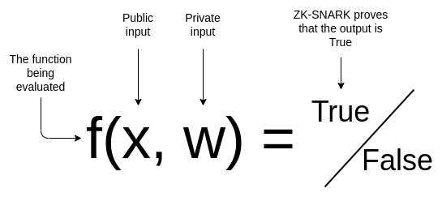
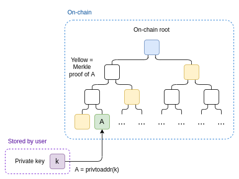
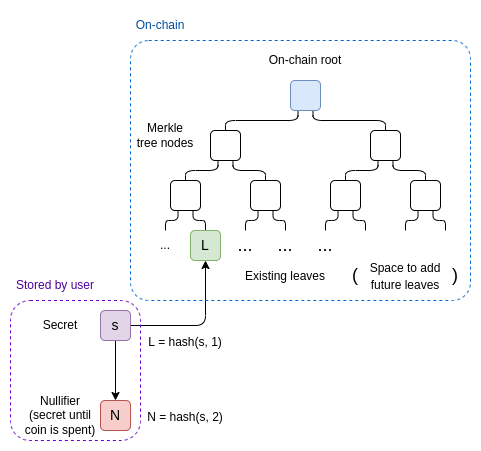
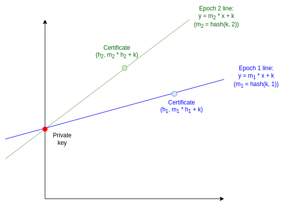
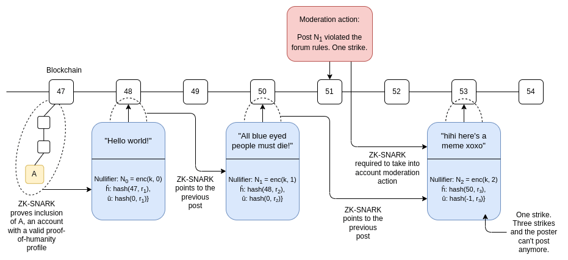
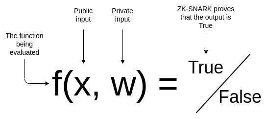
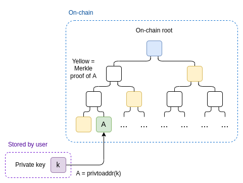
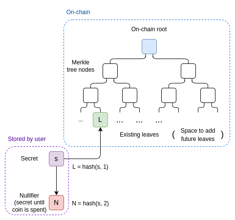
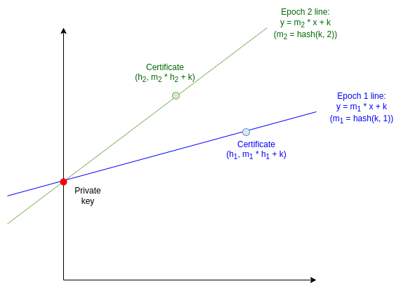
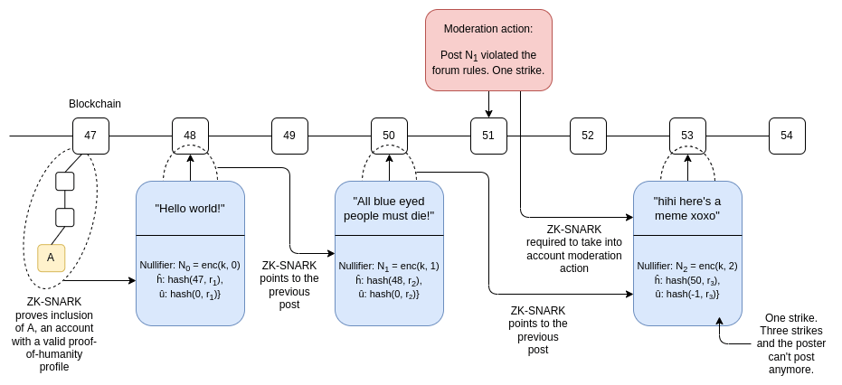

Some ways to use ZK-SNARKs for privacy
2022 Jun 15
See all posts
Some ways to use ZK-SNARKs for privacy
Special thanks to Barry Whitehat and Gubsheep for feedback and
review.
ZK-SNARKs are a powerful cryptographic tool, and an increasingly
important part of the applications that people are building both in the
blockchain space and beyond. But they are complicated, both in terms of
how they work, and in terms of how you can use
them.
My previous post explaining
ZK-SNARKs focused on the first question, attempting to explain the
math behind ZK-SNARKs in a way that's reasonably understandable but
still theoretically complete. This post will focus on the second
question: how do ZK-SNARKs fit into existing applications, what are some
examples of what they can do, what can't they do, and what are some
general guidelines for figuring out whether or not ZK-SNARKing some
particular application is possible?
In particular, this post focuses on applications of ZK-SNARKs
for preserving privacy.
What does a ZK-SNARK do?
Suppose that you have a public input \(x\), a private input \(w\), and a (public) function \(f(x, w) \rightarrow \{True, False\}\) that
performs some kind of verification on the inputs. With a ZK-SNARK, you
can prove that you know an \(w\) such
that \(f(x, w) = True\) for some given
\(f\) and \(x\), without revealing what \(w\) is. Additionally, the verifier can
verify the proof much faster it would take for them to compute \(f(x, w)\) themselves, even if they know
\(w\).

This gives the ZK-SNARK its two properties: privacy
and scalability. As mentioned above, in this post our
examples will focus on privacy.
Proof of membership
Suppose that you have an Ethereum wallet, and you want to prove that
this wallet has a proof-of-humanity registration, without revealing
which registered human you are. We can mathematically describe
the function as follows:
- The private input (\(w\)): your address \(A\), and the private key \(k\) to your address
- The public input (\(x\)): the set of all addresses with
verified proof-of-humanity profiles \(\{H_1
... H_n\}\)
- The verification function \(f(x, w)\):
- Interpret \(w\) as the pair \((A, k)\), and \(x\) as the list of valid profiles \(\{H_1 ... H_n\}\)
- Verify that \(A\) is one of the
addresses in \(\{H_1 ... H_n\}\)
- Verify that \(privtoaddr(k) =
A\)
- Return \(True\) if both
verifications pass, \(False\) if either
verification fails
The prover generates their address \(A\) and the associated key \(k\), and provides \(w = (A, k)\) as the private input to \(f\). They take the public input, the
current set of verified proof-of-humanity profiles \(\{H_1 ... H_n\}\), from the chain. They run
the ZK-SNARK proving algorithm, which (assuming the inputs are correct)
generates the proof. The prover sends the proof to the verifier and they
provide the block height at which they obtained the list of verified
profiles.
The verifier also reads the chain, gets the list \(\{H_1 ... H_n\}\) at the height that the
prover specified, and checks the proof. If the check passes, the
verifier is convinced that the prover has some verified
proof-of-humanity profile.
Before we move on to more complicated examples, I highly
recommend you go over the above example until you understand every bit
of what is going on.
Making the
proof-of-membership more efficient
One weakness in the above proof system is that the verifier needs to
know the whole set of profiles \(\{H_1 ...
H_n\}\), and they need to spend \(O(n)\) time "inputting" this set into the
ZK-SNARK mechanism.
We can solve this by instead passing in as a public input an on-chain
Merkle root containing all profiles (this could just be the
state root). We add another private input, a Merkle proof \(M\) proving that the prover's account \(A\) is in the relevant part of the
tree.

Advanced readers: A very new and more efficient alternative to
Merkle proofs for ZK-proving membership is Caulk. In the future, some
of these use cases may migrate to Caulk-like schemes.
ZK-SNARKs for coins
Projects like Zcash and Tornado.cash allow you to have
privacy-preserving currency. Now, you might think that you can
take the "ZK proof-of-humanity" above, but instead of proving access of
a proof-of-humanity profile, use it to prove access to a coin.
But we have a problem: we have to simultaneously solve privacy and
the double spending problem. That is, it should not be possible to
spend the coin twice.
Here's how we solve this. Anyone who has a coin has a private secret
\(s\). They locally compute the "leaf"
\(L = hash(s, 1)\), which gets
published on-chain and becomes part of the state, and \(N = hash(s, 2)\), which we call the
nullifier. The state gets stored in a Merkle tree.

To spend a coin, the sender must make a ZK-SNARK where:
- The public input contains a nullifier \(N\), the current or recent Merkle root
\(R\), and a new leaf \(L'\) (the intent is that recipient has
a secret \(s'\), and passes to the
sender \(L' = hash(s',
1)\))
- The private input contains a secret \(s\), a leaf \(L\) and a Merkle branch \(M\)
- The verification function checks that:
- \(M\) is a valid Merkle branch
proving that \(L\) is a leaf in a tree
with root \(R\), where \(R\) is the current Merkle root of the
state
- \(hash(s, 1) = L\)
- \(hash(s, 2) = N\)
The transaction contains the nullifier \(N\) and the new leaf \(L'\). We don't actually prove anything
about \(L'\), but we "mix it in" to
the proof to prevent \(L'\) from
being modified by third parties when the transaction is in-flight.
To verify the transaction, the chain checks the ZK-SNARK, and
additionally checks that \(N\) has not
been used in a previous spending transaction. If the transaction
succeeds, \(N\) is added to the spent
nullifier set, so that it cannot be spent again. \(L'\) is added to the Merkle tree.
What is going on here? We are using a zk-SNARK to relate two values,
\(L\) (which goes on-chain when a coin
is created) and \(N\) (which goes
on-chain when a coin is spent), without revealing which \(L\) is connected to which \(N\). The connection between \(L\) and \(N\) can only be discovered if you know the
secret \(s\) that generates both. Each
coin that gets created can only be spent once (because for each \(L\) there is only one valid corresponding
\(N\)), but which coin is
being spent at a particular time is kept hidden.
This is also an important primitive to understand. Many of
the mechanisms we describe below will be based on a very similar
"privately spend only once" gadget, though for different
purposes.
Coins with arbitrary
balances
The above can easily be extended to coins of arbitrary balances. We
keep the concept of "coins", except each coin has a (private) balance
attached. One simple way to do this is have the chain store for each
coin not just the leaf \(L\) but also
an encrypted balance.
Each transaction would consume two coins and create two new
coins, and it would add two (leaf, encrypted balance) pairs to the
state. The ZK-SNARK would also check that the sum of the balances coming
in equals the sum of the balances going out, and that the two output
balances are both non-negative.
ZK anti-denial-of-service
An interesting anti-denial-of-service
gadget. Suppose that you have some on-chain identity that is non-trivial
to create: it could be a proof-of-humanity profile, it could be a
validator with 32 ETH, or it could just be an account that has a nonzero
ETH balance. We could create a more DoS resistant peer-to-peer network
by only accepting a message if it comes with a proof that the message's
sender has such a profile. Every profile would be allowed to send up to
1000 messages per hour, and a sender's profile would be removed from the
list if the sender cheats. But how do we make this
privacy-preserving?
First, the setup. Let \(k\) be the
private key of a user; \(A =
privtoaddr(k)\) is the corresponding address. The list of valid
addresses is public (eg. it's a registry on-chain). So far this is
similar to the proof-of-humanity example: you have to prove that you
have the private key to one address without revealing which one. But
here, we don't just want a proof that you're in the list. We want a
protocol that lets you prove you're in the list but prevents you
from making too many proofs. And so we need to do some more
work.
We'll divide up time into epochs; each epoch lasts 3.6 seconds (so,
1000 epochs per hour). Our goal will be to allow each user to send only
one message per epoch; if the user sends two messages in the
same epoch, they will get caught. To allow users to send occasional
bursts of messages, they are allowed to use epochs in the recent past,
so if some user has 500 unused epochs they can use those epochs to send
500 messages all at once.
The protocol
We'll start with a simple version: we use nullifiers. A user
generates a nullifier with \(N = hash(k,
e)\), where \(k\) is their key
and \(e\) is the epoch number, and
publishes it along with the message \(m\). The ZK-SNARK once again mixes in \(hash(m)\) without verifying anything about
\(m\), so that the proof is bound to a
single message. If a user makes two proofs bound to two different
messages with the same nullifier, they can get caught.
Now, we'll move on to the more complex version. Instead of just
making it easy to prove if someone used the same epoch twice, this next
protocol will actually reveal their private key in that case.
Our core technique will rely on the "two points make a line" trick: if
you reveal one point on a line, you've revealed little, but if you
reveal two points on a line, you've revealed the whole line.
For each epoch \(e\), we take the
line \(L_e(x) = hash(k, e) * x + k\).
The slope of the line is \(hash(k,
e)\), and the y-intercept is \(k\); neither is known to the public. To
make a certificate for a message \(m\), the sender provides \(y = L_e(hash(m)) =\) \(hash(k, e) * hash(m) + k\), along with a
ZK-SNARK proving that \(y\) was
computed correctly.

To recap, the ZK-SNARK here is as follows:
- Public input:
- \(\{A_1 ... A_n\}\), the list of
valid accounts
- \(m\), the message that the
certificate is verifying
- \(e\), the epoch number used for
the certificate
- \(y\), the line function
evaluation
- Private input:
- Verification function:
- Check that \(privtoaddr(k)\) is in
\(\{A_1 ... A_n\}\)
- Check that \(y = hash(k, e) * hash(m) +
k\)
But what if someone uses a single epoch twice? That means they
published two values \(m_1\) and \(m_2\) and the corresponding certificate
values \(y_1 = hash(k, e) * hash(m_1) +
k\) and \(y_2 = hash(k, e) * hash(m_2)
+ k\). We can use the two points to recover the line, and hence
the y-intercept (which is the private key):
\(k = y_1 - hash(m_1) * \frac{y_2 -
y_1}{hash(m_2) - hash(m_1)}\)
So if someone reuses an epoch, they leak out their private key for
everyone to see. Depending on the circumstance, this could imply stolen
funds, a slashed validator, or simply the private key getting
broadcasted and included into a smart contract, at which point the
corresponding address would get removed from the set.
What have we accomplished here? A viable off-chain, anonymous
anti-denial-of-service system useful for systems like blockchain
peer-to-peer networks, chat applications, etc, without requiring any
proof of work. The RLN
(rate limiting nullifier) project is currently building essentially
this idea, though with minor modifications (namely, they do
both the nullifier and the two-points-on-a-line technique,
using the nullifier to make it easier to catch double-use of an
epoch).
ZK negative reputation
Suppose that we want to build 0chan, an internet
forum which provides full anonymity like 4chan (so you don't even have
persistent names), but has a reputation system to encourage more quality
content. This could be a system where some moderation DAO can flag posts
as violating the rules of the system and institutes a
three-strikes-and-you're-out mechanism, it could be users being able to
upvote and downvote posts; there are lots of configurations.
The reputation system could support positive or negative reputation;
however, supporting negative reputation requires extra infrastructure to
require the user to take into account all reputation messages
in their proof, even the negative ones. It's this harder use case, which
is similar to what is being implemented with Unirep Social, that
we'll focus on.
Chaining posts: the basics
Anyone can make a post by publishing a message on-chain that contains
the post, and a ZK-SNARK proving that either (i) you own some scarce
external identity, eg. proof-of-humanity, that entitles you to create an
account, or (ii) that you made some specific previous post.
Specifically, the ZK-SNARK is as follows:
- Public inputs:
- The nullifier \(N\)
- A recent blockchain state root \(R\)
- The post contents ("mixed in" to the proof to bind it to the post,
but we don't do any computation on it)
- Private inputs:
- Your private key \(k\)
- Either an external identity (with address \(A\)), or the nullifier \(N_{prev}\) used by the previous post
- A Merkle proof \(M\) proving
inclusion of \(A\) or \(N_{prev}\) on-chain
- The number \(i\) of posts that you
have previously made with this account
- Verification function:
- Check that \(M\) is a valid Merkle
branch proving that (either \(A\) or
\(N_{prev}\), whichever is provided) is
a leaf in a tree with root \(R\)
- Check that \(N = enc(i, k)\), where
\(enc\) is an encryption function (eg.
AES)
- If \(i = 0\), check that \(A = privtoaddr(k)\), otherwise check that
\(N_{prev} = enc(i-1, k)\)
In addition to verifying the proof, the chain also checks that (i)
\(R\) actually is a recent state root,
and (ii) the nullifier \(N\) has not
yet been used. So far, this is like the privacy-preserving coin
introduced earlier, but we add a procedure for "minting" a new account,
and we remove the ability to "send" your account to a different key -
instead, all nullifiers are generated using your original key.
We use \(enc\) instead of \(hash\) here to make the nullifiers
reversible: if you have \(k\), you can
decrypt any specific nullifier you see on-chain and if the result is a
valid index and not random junk (eg. we could just check \(dec(N) < 2^{64}\)), then you know that
nullifier was generated using \(k\).
Adding reputation
Reputation in this scheme is on-chain and in the clear: some smart
contract has a method addReputation, which takes as input
(i) the nullifier published along with the post, and (ii) the number of
reputation units to add and subtract.
We extend the on-chain data stored per post: instead of just storing
the nullifier \(N\), we store \(\{N, \bar{h}, \bar{u}\}\), where:
- \(\bar{h} = hash(h, r)\) where
\(h\) is the block height of the state
root that was referenced in the proof
- \(\bar{u} = hash(u, r)\) where
\(u\) is the account's reputation score
(0 for a fresh account)
\(r\) here is simply a random value,
added to prevent \(h\) and \(u\) from being uncovered by brute-force
search (in cryptography jargon, adding \(r\) makes the hash a hiding
commitment).
Suppose that a post uses a root \(R\) and stores \(\{N, \bar{h}, \bar{u}\}\). In the proof, it
links to a previous post, with stored data \(\{N_{prev}, \bar{h}_{prev},
\bar{u}_{prev}\}\). The post's proof is also required to walk
over all the reputation entries that have been published between \(h_{prev}\) and \(h\). For each nullifier \(N\), the verification function would
decrypt \(N\) using the user's key
\(k\), and if the decryption outputs a
valid index it would apply the reputation update. If the sum of all
reputation updates is \(\delta\), the
proof would finally check \(u = u_{prev} +
\delta\).

If we want a "three strikes and you're out" rule, the ZK-SNARK would
also check \(u > -3\). If we want a
rule where a post can get a special "high-reputation poster" flag if the
poster has \(\ge 100\) rep, we can
accommodate that by adding "is \(u \ge
100\)?" as a public input. Many kinds of such rules can be
accommodated.
To increase the scalability of the scheme, we could split it up into
two kinds of messages: posts and reputation update
acknowledgements (RCAs). A post would be off-chain, though it would
be required to point to an RCA made in the past week. RCAs would be
on-chain, and an RCA would walk through all the reputation updates since
that poster's previous RCA. This way, the on-chain load is reduced to
one transaction per poster per week plus one transaction per reputation
message (a very low level if reputation updates are rare, eg. they're
only used for moderation actions or perhaps "post of the day" style
prizes).
Holding centralized
parties accountable
Sometimes, you need to build a scheme that has a central "operator"
of some kind. This could be for many reasons: sometimes it's for
scalability, and sometimes it's for privacy - specifically, the privacy
of data held by the operator.
The MACI
coercion-resistant voting system, for example, requires voters to submit
their votes on-chain encrypted to a secret key held by a central
operator. The operator would decrypt all the votes on-chain, count them
up, and reveal the final result, along with a ZK-SNARK proving that they
did everything correctly. This extra complexity is necessary to ensure a
strong privacy property (called coercion-resistance):
that users cannot prove to others how they voted even if they wanted
to.
Thanks to blockchains and ZK-SNARKs, the amount of trust in the
operator can be kept very low. A malicious operator could still break
coercion resistance, but because votes are published on the blockchain,
the operator cannot cheat by censoring votes, and because the operator
must provide a ZK-SNARK, they cannot cheat by mis-calculating the
result.
Combining ZK-SNARKs with MPC
A more advanced use of ZK-SNARKs involves making proofs over
computations where the inputs are split between two or more parties, and
we don't want each party to learn the other parties' inputs. You can
satisfy the privacy requirement with garbled circuits in the
2-party case, and more complicated multi-party computation protocols in
the N-party case. ZK-SNARKs can be combined with these protocols to do
verifiable multi-party computation.
This could enable more advanced reputation systems where multiple
participants can perform joint computations over their private inputs,
it could enable privacy-preserving but authenticated data markets, and
many other applications. That said, note that the math for doing this
efficiently is still relatively in its infancy.
What can't we make private?
ZK-SNARKs are generally very effective for creating systems where
users have private state. But ZK-SNARKs cannot hold private
state that nobody knows. To make a proof about a piece
of information, the prover has to know that piece of information in
cleartext.
A simple example of what can't (easily) be made private is Uniswap.
In Uniswap, there is a single logically-central
"thing", the market maker account, which belongs to no one, and every
single trade on Uniswap is trading against the market maker account. You
can't hide the state of the market maker account, because then someone
would have to hold the state in cleartext to make proofs, and their
active involvement would be necessary in every single transaction.
You could make a centrally-operated, but safe and private,
Uniswap with ZK-SNARKed garbled circuits, but it's not clear that the
benefits of doing this are worth the costs. There may not even be any
real benefit: the contract would need to be able to tell users what the
prices of the assets are, and the block-by-block changes in the prices
tell a lot about what the trading activity is.
Blockchains can make state information global, ZK-SNARKs can
make state information private, but we don't really have any
good way to make state information global and private at the
same time.
Edit: you can use multi-party computation to implement shared
private state. But this requires an honest-majority threshold
assumption, and one that's likely unstable in practice because (unlike
eg. with 51% attacks) a malicious majority could collude to break the
privacy without ever being detected.
Putting the primitives
together
In the sections above, we've seen some examples that are powerful and
useful tools by themselves, but they are also intended to serve as
building blocks in other applications. Nullifiers, for example, are
important for currency, but it turns out that they pop up again and
again in all kinds of use cases.
The "forced chaining" technique used in the negative reputation
section is very broadly applicable. It's effective for many applications
where users have complex "profiles" that change in complex ways over
time, and you want to force the users to follow the rules of the system
while preserving privacy so no one sees which user is performing which
action. Users could even be required to have entire private Merkle trees
representing their internal "state". The "commitment pool" gadget proposed in this
post could be built with ZK-SNARKs. And if some application can't be
entirely on-chain and must have a centralized operator, the exact same
techniques can be used to keep the operator honest too.
ZK-SNARKs are a really powerful tool for combining together the
benefits of accountability and privacy. They do have their limits,
though in some cases clever application design can work around those
limits. I expect to see many more applications using ZK-SNARKs, and
eventually applications combining ZK-SNARKs with other forms of
cryptography, to be built in the years to come.
Some ways to use ZK-SNARKs for privacy
2022 Jun 15 See all postsSpecial thanks to Barry Whitehat and Gubsheep for feedback and review.
ZK-SNARKs are a powerful cryptographic tool, and an increasingly important part of the applications that people are building both in the blockchain space and beyond. But they are complicated, both in terms of how they work, and in terms of how you can use them.
My previous post explaining ZK-SNARKs focused on the first question, attempting to explain the math behind ZK-SNARKs in a way that's reasonably understandable but still theoretically complete. This post will focus on the second question: how do ZK-SNARKs fit into existing applications, what are some examples of what they can do, what can't they do, and what are some general guidelines for figuring out whether or not ZK-SNARKing some particular application is possible?
In particular, this post focuses on applications of ZK-SNARKs for preserving privacy.
What does a ZK-SNARK do?
Suppose that you have a public input \(x\), a private input \(w\), and a (public) function \(f(x, w) \rightarrow \{True, False\}\) that performs some kind of verification on the inputs. With a ZK-SNARK, you can prove that you know an \(w\) such that \(f(x, w) = True\) for some given \(f\) and \(x\), without revealing what \(w\) is. Additionally, the verifier can verify the proof much faster it would take for them to compute \(f(x, w)\) themselves, even if they know \(w\).

This gives the ZK-SNARK its two properties: privacy and scalability. As mentioned above, in this post our examples will focus on privacy.
Proof of membership
Suppose that you have an Ethereum wallet, and you want to prove that this wallet has a proof-of-humanity registration, without revealing which registered human you are. We can mathematically describe the function as follows:
The prover generates their address \(A\) and the associated key \(k\), and provides \(w = (A, k)\) as the private input to \(f\). They take the public input, the current set of verified proof-of-humanity profiles \(\{H_1 ... H_n\}\), from the chain. They run the ZK-SNARK proving algorithm, which (assuming the inputs are correct) generates the proof. The prover sends the proof to the verifier and they provide the block height at which they obtained the list of verified profiles.
The verifier also reads the chain, gets the list \(\{H_1 ... H_n\}\) at the height that the prover specified, and checks the proof. If the check passes, the verifier is convinced that the prover has some verified proof-of-humanity profile.
Before we move on to more complicated examples, I highly recommend you go over the above example until you understand every bit of what is going on.
Making the proof-of-membership more efficient
One weakness in the above proof system is that the verifier needs to know the whole set of profiles \(\{H_1 ... H_n\}\), and they need to spend \(O(n)\) time "inputting" this set into the ZK-SNARK mechanism.
We can solve this by instead passing in as a public input an on-chain Merkle root containing all profiles (this could just be the state root). We add another private input, a Merkle proof \(M\) proving that the prover's account \(A\) is in the relevant part of the tree.

Advanced readers: A very new and more efficient alternative to Merkle proofs for ZK-proving membership is Caulk. In the future, some of these use cases may migrate to Caulk-like schemes.
ZK-SNARKs for coins
Projects like Zcash and Tornado.cash allow you to have privacy-preserving currency. Now, you might think that you can take the "ZK proof-of-humanity" above, but instead of proving access of a proof-of-humanity profile, use it to prove access to a coin. But we have a problem: we have to simultaneously solve privacy and the double spending problem. That is, it should not be possible to spend the coin twice.
Here's how we solve this. Anyone who has a coin has a private secret \(s\). They locally compute the "leaf" \(L = hash(s, 1)\), which gets published on-chain and becomes part of the state, and \(N = hash(s, 2)\), which we call the nullifier. The state gets stored in a Merkle tree.

To spend a coin, the sender must make a ZK-SNARK where:
The transaction contains the nullifier \(N\) and the new leaf \(L'\). We don't actually prove anything about \(L'\), but we "mix it in" to the proof to prevent \(L'\) from being modified by third parties when the transaction is in-flight.
To verify the transaction, the chain checks the ZK-SNARK, and additionally checks that \(N\) has not been used in a previous spending transaction. If the transaction succeeds, \(N\) is added to the spent nullifier set, so that it cannot be spent again. \(L'\) is added to the Merkle tree.
What is going on here? We are using a zk-SNARK to relate two values, \(L\) (which goes on-chain when a coin is created) and \(N\) (which goes on-chain when a coin is spent), without revealing which \(L\) is connected to which \(N\). The connection between \(L\) and \(N\) can only be discovered if you know the secret \(s\) that generates both. Each coin that gets created can only be spent once (because for each \(L\) there is only one valid corresponding \(N\)), but which coin is being spent at a particular time is kept hidden.
This is also an important primitive to understand. Many of the mechanisms we describe below will be based on a very similar "privately spend only once" gadget, though for different purposes.
Coins with arbitrary balances
The above can easily be extended to coins of arbitrary balances. We keep the concept of "coins", except each coin has a (private) balance attached. One simple way to do this is have the chain store for each coin not just the leaf \(L\) but also an encrypted balance.
Each transaction would consume two coins and create two new coins, and it would add two (leaf, encrypted balance) pairs to the state. The ZK-SNARK would also check that the sum of the balances coming in equals the sum of the balances going out, and that the two output balances are both non-negative.
ZK anti-denial-of-service
An interesting anti-denial-of-service gadget. Suppose that you have some on-chain identity that is non-trivial to create: it could be a proof-of-humanity profile, it could be a validator with 32 ETH, or it could just be an account that has a nonzero ETH balance. We could create a more DoS resistant peer-to-peer network by only accepting a message if it comes with a proof that the message's sender has such a profile. Every profile would be allowed to send up to 1000 messages per hour, and a sender's profile would be removed from the list if the sender cheats. But how do we make this privacy-preserving?
First, the setup. Let \(k\) be the private key of a user; \(A = privtoaddr(k)\) is the corresponding address. The list of valid addresses is public (eg. it's a registry on-chain). So far this is similar to the proof-of-humanity example: you have to prove that you have the private key to one address without revealing which one. But here, we don't just want a proof that you're in the list. We want a protocol that lets you prove you're in the list but prevents you from making too many proofs. And so we need to do some more work.
We'll divide up time into epochs; each epoch lasts 3.6 seconds (so, 1000 epochs per hour). Our goal will be to allow each user to send only one message per epoch; if the user sends two messages in the same epoch, they will get caught. To allow users to send occasional bursts of messages, they are allowed to use epochs in the recent past, so if some user has 500 unused epochs they can use those epochs to send 500 messages all at once.
The protocol
We'll start with a simple version: we use nullifiers. A user generates a nullifier with \(N = hash(k, e)\), where \(k\) is their key and \(e\) is the epoch number, and publishes it along with the message \(m\). The ZK-SNARK once again mixes in \(hash(m)\) without verifying anything about \(m\), so that the proof is bound to a single message. If a user makes two proofs bound to two different messages with the same nullifier, they can get caught.
Now, we'll move on to the more complex version. Instead of just making it easy to prove if someone used the same epoch twice, this next protocol will actually reveal their private key in that case. Our core technique will rely on the "two points make a line" trick: if you reveal one point on a line, you've revealed little, but if you reveal two points on a line, you've revealed the whole line.
For each epoch \(e\), we take the line \(L_e(x) = hash(k, e) * x + k\). The slope of the line is \(hash(k, e)\), and the y-intercept is \(k\); neither is known to the public. To make a certificate for a message \(m\), the sender provides \(y = L_e(hash(m)) =\) \(hash(k, e) * hash(m) + k\), along with a ZK-SNARK proving that \(y\) was computed correctly.

To recap, the ZK-SNARK here is as follows:
But what if someone uses a single epoch twice? That means they published two values \(m_1\) and \(m_2\) and the corresponding certificate values \(y_1 = hash(k, e) * hash(m_1) + k\) and \(y_2 = hash(k, e) * hash(m_2) + k\). We can use the two points to recover the line, and hence the y-intercept (which is the private key):
\(k = y_1 - hash(m_1) * \frac{y_2 - y_1}{hash(m_2) - hash(m_1)}\)
So if someone reuses an epoch, they leak out their private key for everyone to see. Depending on the circumstance, this could imply stolen funds, a slashed validator, or simply the private key getting broadcasted and included into a smart contract, at which point the corresponding address would get removed from the set.
What have we accomplished here? A viable off-chain, anonymous anti-denial-of-service system useful for systems like blockchain peer-to-peer networks, chat applications, etc, without requiring any proof of work. The RLN (rate limiting nullifier) project is currently building essentially this idea, though with minor modifications (namely, they do both the nullifier and the two-points-on-a-line technique, using the nullifier to make it easier to catch double-use of an epoch).
ZK negative reputation
Suppose that we want to build 0chan, an internet forum which provides full anonymity like 4chan (so you don't even have persistent names), but has a reputation system to encourage more quality content. This could be a system where some moderation DAO can flag posts as violating the rules of the system and institutes a three-strikes-and-you're-out mechanism, it could be users being able to upvote and downvote posts; there are lots of configurations.
The reputation system could support positive or negative reputation; however, supporting negative reputation requires extra infrastructure to require the user to take into account all reputation messages in their proof, even the negative ones. It's this harder use case, which is similar to what is being implemented with Unirep Social, that we'll focus on.
Chaining posts: the basics
Anyone can make a post by publishing a message on-chain that contains the post, and a ZK-SNARK proving that either (i) you own some scarce external identity, eg. proof-of-humanity, that entitles you to create an account, or (ii) that you made some specific previous post. Specifically, the ZK-SNARK is as follows:
In addition to verifying the proof, the chain also checks that (i) \(R\) actually is a recent state root, and (ii) the nullifier \(N\) has not yet been used. So far, this is like the privacy-preserving coin introduced earlier, but we add a procedure for "minting" a new account, and we remove the ability to "send" your account to a different key - instead, all nullifiers are generated using your original key.
We use \(enc\) instead of \(hash\) here to make the nullifiers reversible: if you have \(k\), you can decrypt any specific nullifier you see on-chain and if the result is a valid index and not random junk (eg. we could just check \(dec(N) < 2^{64}\)), then you know that nullifier was generated using \(k\).
Adding reputation
Reputation in this scheme is on-chain and in the clear: some smart contract has a method
addReputation, which takes as input (i) the nullifier published along with the post, and (ii) the number of reputation units to add and subtract.We extend the on-chain data stored per post: instead of just storing the nullifier \(N\), we store \(\{N, \bar{h}, \bar{u}\}\), where:
\(r\) here is simply a random value, added to prevent \(h\) and \(u\) from being uncovered by brute-force search (in cryptography jargon, adding \(r\) makes the hash a hiding commitment).
Suppose that a post uses a root \(R\) and stores \(\{N, \bar{h}, \bar{u}\}\). In the proof, it links to a previous post, with stored data \(\{N_{prev}, \bar{h}_{prev}, \bar{u}_{prev}\}\). The post's proof is also required to walk over all the reputation entries that have been published between \(h_{prev}\) and \(h\). For each nullifier \(N\), the verification function would decrypt \(N\) using the user's key \(k\), and if the decryption outputs a valid index it would apply the reputation update. If the sum of all reputation updates is \(\delta\), the proof would finally check \(u = u_{prev} + \delta\).

If we want a "three strikes and you're out" rule, the ZK-SNARK would also check \(u > -3\). If we want a rule where a post can get a special "high-reputation poster" flag if the poster has \(\ge 100\) rep, we can accommodate that by adding "is \(u \ge 100\)?" as a public input. Many kinds of such rules can be accommodated.
To increase the scalability of the scheme, we could split it up into two kinds of messages: posts and reputation update acknowledgements (RCAs). A post would be off-chain, though it would be required to point to an RCA made in the past week. RCAs would be on-chain, and an RCA would walk through all the reputation updates since that poster's previous RCA. This way, the on-chain load is reduced to one transaction per poster per week plus one transaction per reputation message (a very low level if reputation updates are rare, eg. they're only used for moderation actions or perhaps "post of the day" style prizes).
Holding centralized parties accountable
Sometimes, you need to build a scheme that has a central "operator" of some kind. This could be for many reasons: sometimes it's for scalability, and sometimes it's for privacy - specifically, the privacy of data held by the operator.
The MACI coercion-resistant voting system, for example, requires voters to submit their votes on-chain encrypted to a secret key held by a central operator. The operator would decrypt all the votes on-chain, count them up, and reveal the final result, along with a ZK-SNARK proving that they did everything correctly. This extra complexity is necessary to ensure a strong privacy property (called coercion-resistance): that users cannot prove to others how they voted even if they wanted to.
Thanks to blockchains and ZK-SNARKs, the amount of trust in the operator can be kept very low. A malicious operator could still break coercion resistance, but because votes are published on the blockchain, the operator cannot cheat by censoring votes, and because the operator must provide a ZK-SNARK, they cannot cheat by mis-calculating the result.
Combining ZK-SNARKs with MPC
A more advanced use of ZK-SNARKs involves making proofs over computations where the inputs are split between two or more parties, and we don't want each party to learn the other parties' inputs. You can satisfy the privacy requirement with garbled circuits in the 2-party case, and more complicated multi-party computation protocols in the N-party case. ZK-SNARKs can be combined with these protocols to do verifiable multi-party computation.
This could enable more advanced reputation systems where multiple participants can perform joint computations over their private inputs, it could enable privacy-preserving but authenticated data markets, and many other applications. That said, note that the math for doing this efficiently is still relatively in its infancy.
What can't we make private?
ZK-SNARKs are generally very effective for creating systems where users have private state. But ZK-SNARKs cannot hold private state that nobody knows. To make a proof about a piece of information, the prover has to know that piece of information in cleartext.
A simple example of what can't (easily) be made private is Uniswap. In Uniswap, there is a single logically-central "thing", the market maker account, which belongs to no one, and every single trade on Uniswap is trading against the market maker account. You can't hide the state of the market maker account, because then someone would have to hold the state in cleartext to make proofs, and their active involvement would be necessary in every single transaction.
You could make a centrally-operated, but safe and private, Uniswap with ZK-SNARKed garbled circuits, but it's not clear that the benefits of doing this are worth the costs. There may not even be any real benefit: the contract would need to be able to tell users what the prices of the assets are, and the block-by-block changes in the prices tell a lot about what the trading activity is.
Blockchains can make state information global, ZK-SNARKs can make state information private, but we don't really have any good way to make state information global and private at the same time.
Edit: you can use multi-party computation to implement shared private state. But this requires an honest-majority threshold assumption, and one that's likely unstable in practice because (unlike eg. with 51% attacks) a malicious majority could collude to break the privacy without ever being detected.
Putting the primitives together
In the sections above, we've seen some examples that are powerful and useful tools by themselves, but they are also intended to serve as building blocks in other applications. Nullifiers, for example, are important for currency, but it turns out that they pop up again and again in all kinds of use cases.
The "forced chaining" technique used in the negative reputation section is very broadly applicable. It's effective for many applications where users have complex "profiles" that change in complex ways over time, and you want to force the users to follow the rules of the system while preserving privacy so no one sees which user is performing which action. Users could even be required to have entire private Merkle trees representing their internal "state". The "commitment pool" gadget proposed in this post could be built with ZK-SNARKs. And if some application can't be entirely on-chain and must have a centralized operator, the exact same techniques can be used to keep the operator honest too.
ZK-SNARKs are a really powerful tool for combining together the benefits of accountability and privacy. They do have their limits, though in some cases clever application design can work around those limits. I expect to see many more applications using ZK-SNARKs, and eventually applications combining ZK-SNARKs with other forms of cryptography, to be built in the years to come.